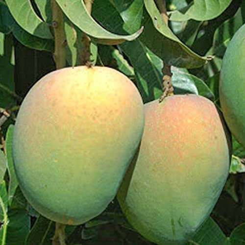

A highly aristocratic, heritage variety historically offered in sacred rituals, celebrated for its perfect round form and majestic flavor profile.
Deeply embedded in the premium horticultural fabric of Bihar, it features exceptional post-harvest longevity and minimal fiber count.
Scan To View Page
| Variety Name | TSS Range (°Brix) | Glycemic Index (GI) |
|---|---|---|
| Krishnabhog ⭐ | 19.5–21.5 | 52 |
| Alphonso | 20.0–22.0 | 56 |
| Dashehari | 18.0–20.0 | 54 |
| Kesar | 19.0–21.0 | 53 |
| Totapuri | 15.0–17.0 | 51 |
* Parameters compiled from standard regional performance targets.